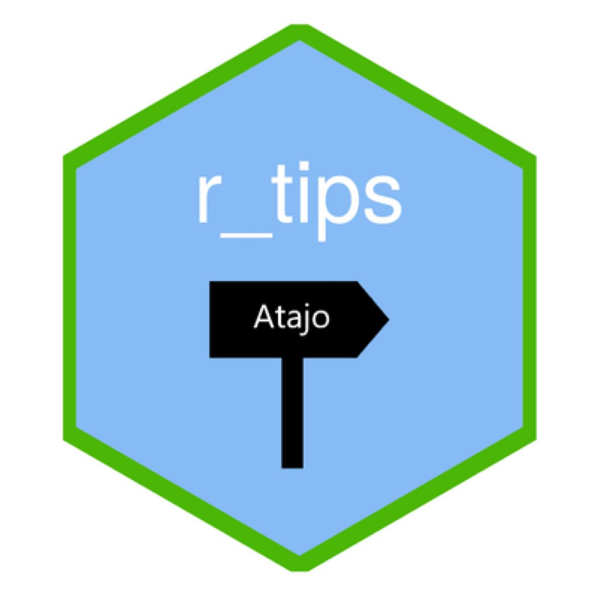
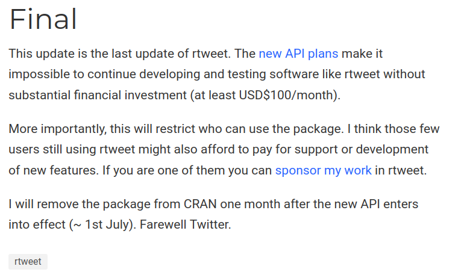

Después de mucho trabajo y no sin frustración, el bot de r_tips está activo y publicando de forma automática tips sobre nuestro lenguaje de programación preferido [R] en la red social [mastodon]
knitr::include_graphics("img/r_tips.jpeg")
r_tips es un bot que nació con el fin de contribuir al desarrollo del lenguaje de programación [R], difundiendo tips que ayuden al día a día con este lenguaje y, por qué no, que también nos permitan divertirnos jugando con los datos. La principal razón de que haya desarrollado este bot es la de devolver un poco de todo lo que la comunidad me ha dado, facilitando código, experiencia y conocimiento y todo ¡sin pedir nada cambio!.
El primer hogar de esta cuenta fue (y sigue siendo) Twitter, red social que, tras ser comprada por Elon Musk pasó a llamarse X. Este cambio no se dió sin sobresaltos, tanto en la paltaforma como en las reglas de juego impuestas por su nuevo dueño. Pero, más allá de ello, quizás el principal problema (al menos para el bot r_tips) fue la inestabilidad e impredecibilidad de su futuro en esta red social más el gran costo que, por esto, implicaba en su mantenimiento.
🎉Habemus Rtips en Mastodon! 🎉
— r_tips (@r_tipss) September 14, 2023
Si andas por esa red, seguí a @r_tips@botsin.space y alimentate de los mejores tips para R.
Esta cuenta seguirá funcionando de modo manual mientras que en Mastodon ya está automatizada (no habrá día sin #Rtips!) pic.twitter.com/JONNQNSrSv
Otro gran factor para replantear la existencia del bot en Twitter es el anuncio de Lluís Revilla Sancho, célebre del aún más celebre paquete {rtweet}, respecto al fin del mantenimiento de la librería que permitía acceder y automatizar la interacción entre Twitter y R, logrando con ello poder hacer tanto análisis de datos con la información generada por la red social como también la creación de bot (como r_tips) que de forma automática publicaban tuits todos los días. Acá pueden profundizar más sobre los motivos
knitr::include_graphics("img/fin_rtweet.png")
Esto fue llevandome, poco a poco, a buscar una alternativa que se alinee con los fundamentos principales de r_tips y que, al mismo tiempo, le permita subsistir sin sobrecarga de tiempo insumido en su mantenimiento (que sea automático o, de mínima, lo más automático posible). Así es como llegamos, r_tips y yo, a Mastodon!
knitr::include_graphics("img/mastodon.png")Mastodon es un software libre desarrollado para implementar las redes sociales de microblogueo que conforman al fediverso, con una gran semejanza a Twitter, siendo lanzada junto con su dominio principal «mastodon.social» en octubre de 20161
En pocas palabras, mastodon es una red social, como Twitter (ahora X). Esto es, usuarios y usuarias que a través de toots (tuis) se expresan. Sin embargo, hay algunas diferencias claves:
Primero y la más importante: los espacios en donde se interactúa no le pertenecen todos a una misma persona (como le pertenece X a Elon Musk), sino a comunidades agrupadas en distintos espacios conocidos como instancias (o federación descentralizada de servidores), basadas en código libre y abierto, publicado en Github.
Cada instancia tiene algo en común que le da su razón de ser. Por ejemplo, hay instancias que tienden a aglomerar usuarios y usuarias interesados en las Ciencias Sociales, en tecnología, software libre y còdigo abierto o simplemente en el intercambio social. Cada espacio tiene reglas definidas por los administradores y uno puede registrarse en más de un espacio al mismo tiempo o incluso migrar una cuenta (con seguidores incluídos) de instancia en instancia.
En Mastodon es bastante más sencillo (y hasta promovido) el acceso a APIS para poder automatizar el intercambio entre la instancia y R. Y, cómo no podría ser de otra manera, quien resume este procedimiento es un paquete de R llamado {rtoot}. Con el, sumado a las Github Actions2, se puede lograr automatizar el posteo de toots con una periodicidad configurada a gusto.
Si alguien está interesado en el paso a paso para lograrlo, dejó aquí un post sobre como hacerlo. A mi me sirvió mucho, tras unas cuantas horas de intentarlo sin éxito.
r_tips seguirá tanto en X como en mastodon. La diferencia será que, al lograr automatizar la publicación de toots en la red social del mastodonte, allí habrá un tip por día, SIN EXCEPCIÓN, mientras que en X trataré de replicar el tip de forma manual, siempre que pueda.
Así que ya saben, pasen por r_tips (v.x) o r_tips (v.mastodon) y disfruten del bello y potente lenguaje de programación [R].
¡Buen provecho!